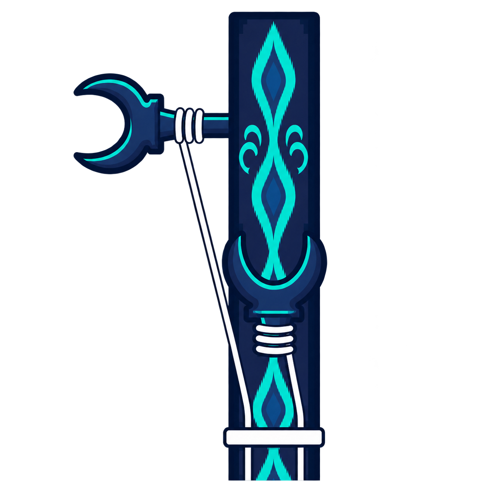

Duttarim
PESTİZ
HAZIR
RE
0 cent

RE
1. TEL · ZİL
SOL
2. TEL · BOM
Akort etmek istediğiniz tele dokunun.
Perde Haritası
Alt tel (1. tel / zil) üzerindeki 15 perde ve nota karşılıkları.
Ayarlar
Dili, referans frekansını ve uygulama tercihlerini yönetin.
Dil
Akort ayarları
Hakkında
Duttarim
Duttar için sade, kültürel motiflerden esinlenen hassas akort uygulaması.
Parçalar
Duttar için hazırlanmış notalar ve çalma önerileri.
Yakında geliyor
Bu bölüm yakında geliyor
Duttar parçaları, notalar ve detaylı çalma önerileri üzerinde çalışıyoruz.
Yakında eklenecek
Duttar parçaları
Yakında eklenecek
Duttar parçaları
Yakında eklenecek
Duttar parçaları